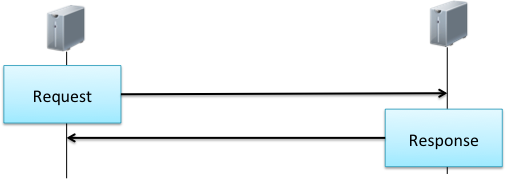
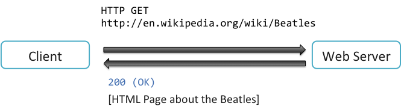
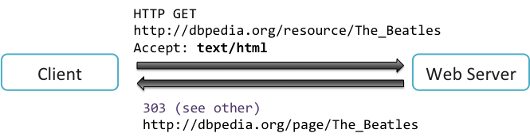
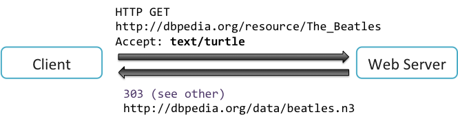
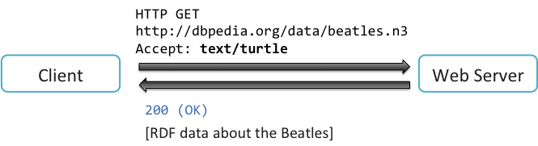

If a Linked Data application is built on the web then it may use Web APIs to either provide data or consume data from other sources. The HTTP protocol is the fundamental technology on which Web APIs are built. The serving of documents on the Web (for example the serving of an HTML page to a web browser) is carried out using the HTTP protocol.
HTTP communication is based on an interaction that involves a series of requests and responses. A client sends a request to a server. The server sends back a response to the client.

Figure 34: Request-Response interaction.
Each HTTP request contains a method, URI, Header and optionally a body. The method indicates the type of the request that the server should perform. The most familiar types of HTTP request are GET and POST. A GET request means the client wants to retrieve content. The URI sent with the GET request is the resource from which the content should be retrieved. A POST request is used to send data. The accompanying URI indicates where the data should be sent. Web forms generally use POST requests to send data to the server.
The other types of HTTP request are used more broadly in web-based client-server communication but not necessarily important when using a web-browser to retrieve and send content. A PUT request to used to store data at the specified URI. A DELETE request is used to delete the specified URI.
Other types of HTTP request include HEAD, TRACE, CONNECT, OPTIONS and PATCH. For example, a HEAD request is used to retrieve header information. A TRACE request is used to allow the client to see what the server is receiving. This is generally used for diagnostics.
As well as the method and URI a HTTP request contains header information that gives additional detail about the HTTP request. A body is required with POST and PUT methods and expresses the data that is to be sent to, or stored at the specified URI. For example, if you submit a web form, then the data entered into the form can be represented in the body of the HTTP request.
A response to a HTTP request contains a numerical response code, a header and optionally a body. The response code gives overall status information on how the request is being handled. The response code is a three digit number beginning with a 1, 2, 3, 4 or 5. Response codes beginning with 1 are provisional responses indicating that the request has been received and is being acted upon.
Requests starting with 2 indicate that the request has been successfully received, understood and accepted by the server. Codes beginning with 3 indicate that further action needs to be taken by the client that issued the initial request. Codes beginning with 4 indicate that the request is erroneous and cannot be met by the server. The most commonly seen response code beginning with 4 is the 404 response code. The 404 response code informs the client that the request was erroneous because it asked for a resource that does not exist on the server. Finally, codes beginning with 5 indicate that there is an error, but in this case the problem is with the server and it is unable to fulfil the valid request.
We can now put the request and response together to illustrate the HTTP request-response pattern, in which a client requests and then receives web page. The client issues a GET request with the URI for the Wikipedia page about The Beatles. This tells the server that the client wants to retrieve information from the provided URI. The final response from the server has a response code 200 (indicating that the request has succeeded) and returns the HTML page about The Beatles.

Figure 35: The HTTP request-response pattern.
When requesting data in a particular media from DBpedia rather than Wikipedia, the communication pattern between client and server is more complex. In this case the URI refers to the concept of The Beatles rather than any particular document describing The Beatles. As shown below, the request uses the method GET and declares that a response is required in HTML format. The URI refers to the concept of The Beatles, which is not a resource in HTML format. The server responds with a code of 303 and another URI. This tells the client to instead make a request for HTML from this alternative URI. The client then makes a second request (not shown) for HTML using the new URI and receives a HTML page about The Beatles with a response code of 200.

Figure 36: Content negotiation when requesting HTML using a Linked Data URI.
In the above HTTP conversation the client requested information in a certain format using a particular URI. The server responded with an alternative URI. The client then made a second request with the new URI. The server responded with the requested information. This conversation between client and server to determine the correct resource is called content negotiation and is often abbreviated to conneg.
The reason this conversation to determine the appropriate content is required is that different types of content can potentially be returned associated with the same resource. If information is being accessed via a web browser, then HTML is likely to be the preferred format. If the client is a Linked Data application consuming data, then the requested information about The Beatles will be preferred in an RDF format such as Turtle (see chapter 1 for more information about the Turtle format). In the figure below we have a GET request using the same URI as in the HTML example above. However, this time the client requests text/turtle rather than text/html. The server responds with the status code 303 (i.e. see other) and a URI where the information can be accessed in Turtle format.

Figure 37: Requesting data in Turtle format
The client then issues a second request and this time retrieves the data in Turtle format along with a status code of 200. This approach is routinely used to publish Linked Data, in which a series of URIs name concepts used in the Linked Data application, such as The Beatles and Paul McCartney. Requests for data to a Linked Data URI are directed to another URI depending on the data format requested. Multiple RDF formats of the same data may be made available such as RDF/XML and Turtle.

Figure 38: Retrieving data in Turtle format.